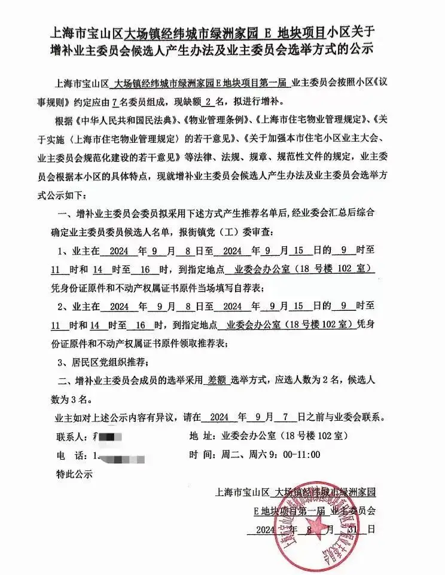
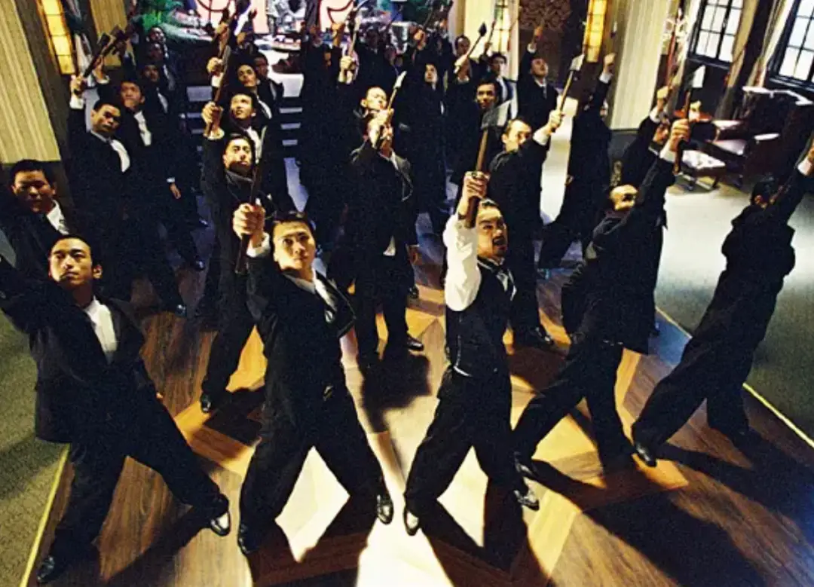

阿根据总统米莱提出，他从来都不相信依靠于政府，每个月领着固定工资的经济学家是真正的经济学家。
他认为，这些人依附于权利，他们做的事情，只是基于权力需要而做的一些经济现象解释工作。
很难真正站在社会需要以及经济规律的角度给出建设性的意见。
这就是立场的重要性。
你依附于什么人，你就会做出什么样的选择。
而业委会委员，只能依附于业主，依附于业主大会，依附于大家的选票。
如果不是，背叛就会成为一种时间早晚的必然。
这一点，从战略意义和重要性来说，必须成为每一个业主的共识。
有了战略上的共识，战术上知道怎么维护自己作为业主的权益，则是同等重要的。
有认知没行动，是悲剧。
有行动没方向，是冲动。
今天，经纬的业委会发布公告，针对三期业主，会进行业委会委员增补选举。

这个公示，看上去平平无奇。
但是实际上存在很大风险。
首先是，本次的增补，并未非常明确的提出，是针对新入住三期业主而进行的选举。
按照此前业委会给出的信息，业委会委员一共7人，5人已经落定，剩下两个名额是给三期业主预留的名额。
现在三期业主已经入住，但是这个公示，未延续此前业委会委员增补的目的。
这就意味着，新增补的两个业委会委员可能最终不一定是三期业主。
其次，这一次是差额选举。
请注意，在最初5人选举落地时，是等额选举。
而这一次，在：
1. 业主已经民主推选出两名业委会委员候选人
2. 业主已经明确要求希望公平，继续沿用等额选举
即使这样，今天的公告却宣布了差额选举。
所谓差额选举，就从2进2变成了3进2。
再加上资格审查，有可能业主自己选出的候选人，连3人名单都进不去。
如果各让一步，也可能最终只有1个人进入业委会，而处于势单力薄的局面。
因此，这个增补公示，是对广大三期业主的挑战。
他们在赌，业主们不会做声！
很多情况下，这种赌博，都会成功。
毕竟，大家苦苦生存已经很难，不想多管闲事也是普遍之心态。
但是，这个选举，就是我强调的战术上不能退却的一关。
一步走错，满盘皆输，我们不能妥协。
所以，我们需要明确的对业委会提出要求：
1. 新的业委会委员，必须从三期业主选出
2. 出于公平，需要继续按照等额选举进行
目前业主推选出来的两位候选人，年轻、专业、负责且乐于接受监督。
这对于目前平均年龄高达53岁的业委会，将会成为很好的补充。
大家都知道选出能代表业主的委员很重要，但是落实到战术上，就需要有人去付出、去坚守。
作为一个成年人，大家都知道，天下没有免费的午餐。
你想要一个能为你发声的业委会，那你就得自己站出来。
合理、合法、合规的维护自己的权益。
业委会自治的本质，是对个体权利的重视以及法治社会繁荣的标志之一。
社区自治，没有那么多弯弯绕绕。
在法律之下，以业主利益为最高追求去守护和运营。
所以，在如今的环境下，能不能选出自己的业委会，将成为上海品质小区与其他小区的最大区别。
因为，品质小区住的是昂首挺胸的公民，其他小区住的是被奴役的牛马。
他们在赌，我们不能等。

- end -
相关阅读
低语者
经纬业主的底线与未来